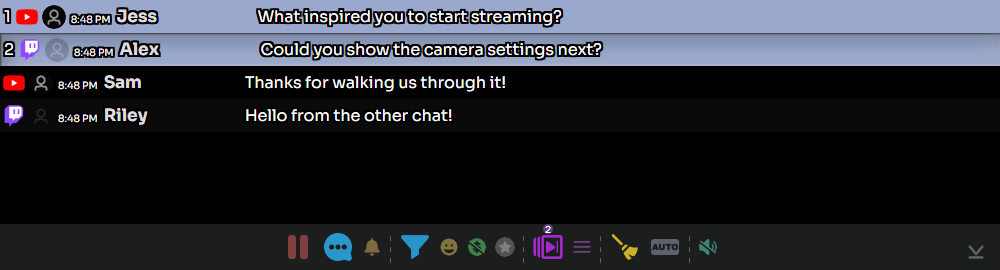

1. Avage operaatori dokk
Alustage sellest, et vestlussõnumid jõuaksid SSN-i. Avage laienduse hüpikaken; töölauarakenduses avage Allikad ja sätted. Avage loodud Voogesituse vestlusdokk link. Hoidke oma allikavestlused ja SSN töös.
Lisa genereeritud Esiletõstetud vestlus link OBS-i brauseriallikana, kasutades sama seanssi ja parooli. Dokk on teie juhtimisaken; esiletõstetud vestlus on vaatajatele. Vt OBS-i kiirjuhend , kui need pole veel ühendatud.
- Jäädvustamine Teie platvormivestlused
- Kasutamine Voogesituse vestlusdokk
- Kuvamine Esiletõstetud vestlus OBS-is
2. Tõstke sõnum esile ja eemaldage see ülekattelt
- Klõpsake dokis vestlussõnumit. See peaks ilmuma ühendatud esiletoodud ülekattes.
- Selle asendamiseks klõpsake teisel sõnumil.
- Kasutage harja nuppu, Tühjenda esiletõstetud sõnum (mitte see vestlus), et eemaldada see ülekattelt.
Kui olete lubanud Peab kontekstimenüüst käsitsi valima, paremklõpsake ja kasutage Tõsta esile selle asemel. Lülitage automaatne esiletõstmine välja, kui soovite iga sõnumi enne kuvamist üle vaadata.


3. Valmistage ette järgmised küsimused
- Hoidke Ctrl sõnumitel klõpsates, et need järjekorda lisada, või paremklõpsake sõnumil ja valige Lisa järjekorda / eemalda järjekorrast.
- Vaadake alumiselt tööriistaribalt järjekorras olevate sõnumite arvu. Kasutage Kuva ainult järjekorras olevad sõnumid , et teie valikud üle vaadata.
- Kasuta Tõsta esile järgmine järjekorras olev sõnum järgmise sõnumi kuvamiseks. Soovimatu sõnumi järjekorrast eemaldamiseks valige uuesti Lisa järjekorda / eemalda järjekorrast.
Kinnitamine on eraldi: Sõnumi hoidmiseks doki kinnitatud alal klõpsake seda Alt-klahvi all hoides või kasutage kontekstimenüü toimingut Kinnita. Järjekord valmistab ette esiletõstetavate sõnumite jada.
4. Vastake õigesse vestlusse
Paremklõpsake vaataja sõnumil ja valige Vasta. Kontrollige adressaati ja sisestage oma vastus, seejärel valige SAADA. Allikas peab toetama vastuseid ja olema sisse logitud postitamise loaga.
Tööriistariba üldine jutumullinupp avab sõnumi saatmise juhtnupud. Kontrollige enne saatmist sihtkohti. Sõnumite edukas vastuvõtmine ei tõenda, et vastuste saatmine töötab. Eraldi saatjakontode kohta vt Robotikontod vastamiseks.
5. Hallake aktiivset vestlust
| Juhtimine | Kasutage seda |
|---|---|
| Peata / jätka sissetuleva vestluse kuvamist | Peatage doki kuva lugemise ajaks; jätkamisel töödeldakse puhverdatud sõnumeid. See ei peata allika jäädvustamist ega teisi ülekatteid. |
| Filter | Otsige asjakohaseid sõnumeid; täisvaatesse naasmiseks tühjendage filter. |
| Annetuste / liikmete filtrid | Piirake ajutiselt kuvatavat vestlust. Lülitage need välja, kui tavalised sõnumid näivad puuduvat. |
| Tagasi uusimate sõnumite juurde / Keri alla | Naaske viimaste sõnumite juurde pärast vanema vestluse lugemist. |
Hoidke Välista filtreeritud sõnumid automaatsest valikust lubatuna, kui kasutate automaatset esiletõstmist koos filtritega. Ainult kuvafilter ei ole modereerimisreegel. Vt Modereerimine ja filtreerimine.
Enne otseülekande algust
Kasutades testsõnumid, tõstke üks sõnum esile, lisage veel kaks järjekorda, liikuge üks kord edasi ja tühjendage ülekate. Kui dokk töötab, kuid OBS on tühi, kontrollige salvestatud OBS-i URL-i, seanssi ja parooli ning esiletõstetud sõnumi brauseriallika laadimist. Vt OBS-i tõrkeotsing.